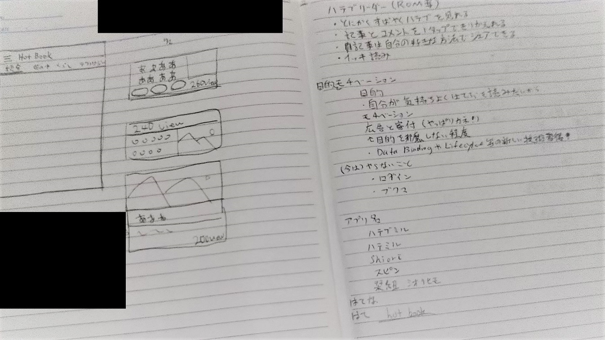
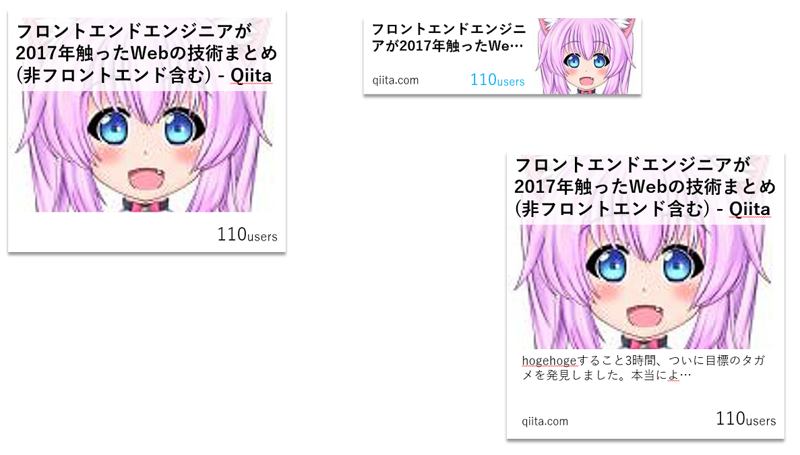

明けましておめでとうございます & 年末年始アプリ開発その1
2018-01-01 19:39:35 +0900 JST
Categories: Android
明けましておめでとうございます。
前年はブログ更新ぼちぼちといった感じですが、今年も消滅しない程度の更新を続けていけるよう頑張っていきたいと思います。
さて年末になり、私はいつも実家に帰省しているのですが、せっかくゆっくりできるこの短い時間を使って何かアプリを作ろうかと考えた次第でございます。
コンセプト
私がいつもアプリ開発で気を付けていることは、アプリ開発はスピード勝負の短期決戦ということです。
特に個人開発において一番の敵は 「飽きる」 ことです。なかなかアプリが完成しないとだんだんとモチベーションが下がってきてしまうので、この年末年始の休みだけで作れそうなアプリを作ることにしました。
その際に重要となるのが アプリのコンセプト です。
- 何に困っていて
- そのために何をするためのアプリなのか
- そしてそのアプリを自分が作る意味とは？
この3つを最初に決めることです。
今回私がアプリ開発を始めるにあたって上のことを整理するためにメモ帳に落書きをしました。

このメモを整理すると、
- はてぶをもっとサクサク読みたい
- はてぶの気になる記事やブコメがすぐ読めるような機能があるスマホアプリを開発する
- モチベーションは 自分のため と Android最新技術の勉強をするため
となります。
ここまで明確になると、作るべきアプリの機能や、逆に 作らなくて良い機能 も明確になり、短期間で集中してアプリを作ることができるのです。
スケッチ
さてメモの左欄に汚い落書きがありますが、これはアプリのイメージを自分の中で固めるために思いついたデザイン案を落書きしたものです。
とにかくエイヤァでいきなりアプリを作り始めるのもまぁまぁよいかもしれませんが、私は作るアプリがどんな感じになるのかを最初に落書きしていろいろ妄想する、といったことを行っています。
これ短期間で開発するのにこんな時間あるの？となりそうですが、いざ実際にアプリを開発しながらあれやこれやとデザインの試行錯誤をするのは結構大変です。
そのため私はある程度スケッチで数パターン考えてみて、その中から一番よさそうなものをまずは作ってみるというやり方をしています。急がば回れですね。
清書
じゃぁいよいよアプリ開発か！と思いきやまだやりません。この後にPCで先ほどの落書きを1枚だけ清書します。
これは落書きだとなんだかいい感じに見えるけどいざ実際にやってみたらなんか微妙になったという経験、みなさんもあるのではないでしょうか？
なのでここで一回、実際自分のデザインがどういうアプリになるのかを清書したイメージで再確認するのです。

私がこのアプリを作ろうして一番気にしているのはリストに表示されるカードレイアウトでした。タイトルとか画像はその時のホッテントリにきたやつをテキトーに拝借しました。清書にはPowerPointを使いました。
落書きを基にいろいろ調整してみたものが左上の初期版、
カードが大きすぎるかなと思って小さくしてみたのが右上のV2、
情報量が少ないと思ったので拡張してみたのが右下のV3です。
これと最近のSNS系アプリを比較してみるとV3でもそんなに一覧性は悪くないかなと思いました。
リストの一覧性より、その記事が気になったり、そのブコメを読んでみたいという気持ちになりやすくなるように、その判断材料をリストの中に入れたほうがUXとしても良いと思い、最終的にはV3のデザインでいってみようということにしました。
おわりに
今日でコンセプトとデザインカンプの作成まで終わりました。明日から2日間しかなですが、開発がんばってみようと思います。